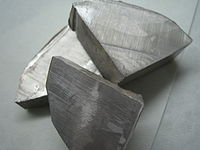

Numero atomico: 11
Massa atomica: 22,99
Temperatura di fusione (°C): 98
Temperatura di ebolizione (°C): 883
Energia di prima ionizzazione (kj/mol): 496
Elettronegatività (secondo Pauling): 0,93
Densità: 0,53
Numeri di ossidazione: +1
Configurazione elettronica: 1s2, 2s2, 2p6, 3s1
Maggiori Informazioni